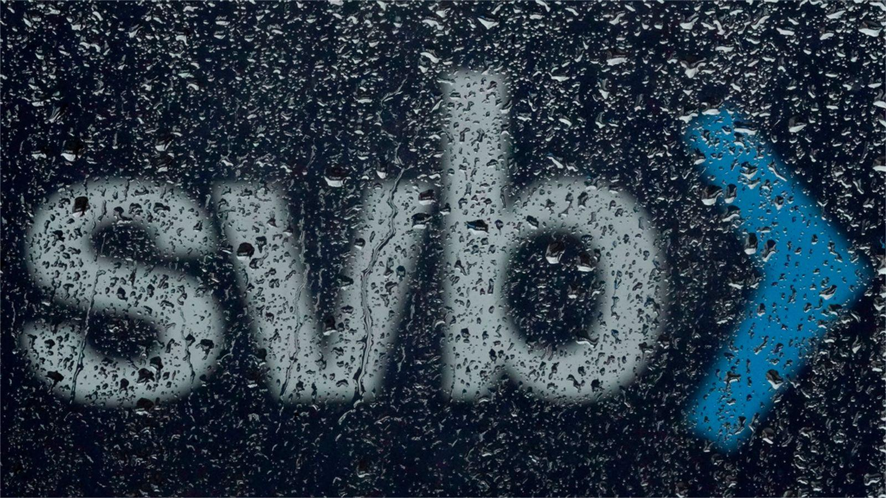

America must plan better for the failure of banks that are large but not enormous
大型银行惨遭倒闭，美国亟需充分筹划
Shed no tears for investors in Silicon Valley Bank (svb). On March 10th the bank, which had $212bn of assets, failed with spectacular speed, making it the biggest lender to collapse since the global financial crisis of 2007-09. Most of SVB’s depositors were Bay Area tech startups with accounts holding well in excess of the $250,000 that is insured by the federal government. They had fled and their panic was rational. By loading up on long-term bonds, SVB had taken an enormous unhedged bet on interest rates staying low. That bet went wrong, leaving the bank insolvent (or near enough). The fact that shareholders have been wiped out and bondholders will take big losses is not a failure of the financial system. A bad business has been allowed to go bust.
不必为硅谷银行的投资者伤神。3月10日，这家坐拥2120亿美元资产的银行以迅雷不及掩耳之势轰然倒塌，不幸成为自2007至2009年全球金融危机以来宣布倒闭的头号放贷机构。硅谷银行里的大部分储户都是位于旧金山湾区的科技初创公司，各自账户的存款总额远超美国联邦政府所保障的25万美元承保额。这些储户纷纷逃离，他们的恐慌合情合理。通过大量购买长期债券，硅谷银行押注利率将保持在低位，且对此不做任何对冲保护。富贵险中求，也在险中丢，此举让它陷入了濒临破产的漩涡。股东权益蒸发殆尽，债权人承受巨大损失，而这并不代表金融体系的失灵。经营不善，难挡破产。
注释：
1. 硅谷银行宣布破产，美国联邦存款保险公司成为破产管理人，政府会为每个账户中的25万美元兜底，但没有具体说明账户存款金额超过25万美元的银行客户将面临什么情况。
http://stock.hexun.com/2023-03-12/207940864.html
2. load up on: To gather, store, or purchase a lot of something to create a large stock or supply.
3. wipe out: To cause someone financial hardship.
It is what happened next that reveals the flaws in America’s banking architecture. SVB probably had enough assets for depositors to have got all or almost all of their money back—but only after a long wait. This left many tech firms facing life in a financial deep-freeze; Roku, a streaming giant, had nearly $500m tied up in SVB. Across the technology sector, lay-offs and bankruptcies loomed. And America’s regulators and government seemed to fear that depositors were losing faith in other banks, too. On March 12th they judged SVB too big to fail and guaranteed all the bank’s deposits. If the sale of its assets does not cover the costs of the depositor bail-out, a fund that is financed by all banks will have to chip in, penalising the whole industry for the recklessness of a single institution.
接下来上演的一切才真正揭露了美国银行业存在的弊端。硅谷银行原本可能有足够资产来让储户取走全部或大部分存款，但回收存款需要漫长的等待，这让许多科技公司面临资金流中断的绝境。流媒体巨头Roku在硅谷银行放有近5亿美元的存款，却无法取出。放眼整个科技行业，裁员潮与破产潮双双逼近。美国的监管机构与政府似乎十分担忧储户对其他银行也会丧失信心。3月12日，二者认为硅谷银行规模太大，破产会引发严重后果，于是承保了该行的所有存款。如果出售硅谷银行的所有资产都无法支付救助储户的费用，那么所有银行就得一齐出资，成立“存款保险基金”来弥补差额，这是让整个银行业来为某家银行的鲁莽行径买单.
注释：
1.FDIC也将在下周内向未保险储户支付优先红利。同时，无保险储户将获得其未投保资金剩余部分的接管证书，随着FDIC进一步出售硅谷银行的资产，未来或许有更多红利向未保险存款者支付。
https://www.thepaper.cn/newsDetail_forward_22199701
2.In the given context, the "fund" likely refers to the deposit insurance fund managed by the Federal Deposit Insurance Corporation (FDIC) in the United States. The FDIC is a US government agency that insures deposits in banks and savings institutions in case of bank failures.
The deposit insurance fund is funded by premiums paid by member banks, and its purpose is to protect depositors in case of bank failures. If a bank that is insured by the FDIC fails, the deposit insurance fund is used to pay depositors up to the insured limit.
At the same time regulators have had to contend with the threat that other banks might also face runs. At the end of 2022 there were $620bn of unrealised securities losses on banks’ books. On March 12th regulators also shut down Signature Bank, another midsized lender—the third bank to fail in a week, given that Silvergate, an institution heavily exposed to cryptocurrency, collapsed on March 8th. And the fallout in the markets continues. As we published this leader on March 13th, bank stocks were continuing to plunge. Those of First Republic, a bank of comparable size to svb, were down by more than 60% on the day.
与此同时，监管机构还需应对另一大威胁：其他银行也可能面临挤兑。截止2022年底，全美银行账目上共有6200亿美元的证券价值亏损尚未被减记。3月12日，监管机构还关闭了另一家中型贷款银行Signature Bank，这是一周内第三家倒台的银行。在此之前，Silvergate于3月8日已经倒闭，该银行在加密货币领域有着巨大的风险敞口。市场动荡，余波未尽。当《经济学人》在3月13日发布这篇文章时，各个银行股价仍在持续暴跌。与硅谷银行规模相当的美国第一共和银行（First Republic），其当日股价跌幅超过60%。
To shore up other banks the Fed is offering them support on strikingly generous terms. A new programme stands ready to make loans secured against long-term Treasuries and mortgage-backed securities, like those on which SVB had gorged. Usually a central bank making loans would impose a haircut on the market value of the securities being offered as collateral. By contrast the Fed will offer loans up to the face value of the securities, which, for long-term bonds, can be more than 50% above the market value. The haircut-in-reverse guarantees that another bank with a bond portfolio like SVB’s would have ample access to cash to pay depositors.
美联储正以极为丰厚的条件为其他银行提供支持。美联储为各银行准备了一个新项目，银行可用长期国债和MBS作为抵押向其借款，而硅谷银行斥巨资收购的正是这两类债券。央行发放贷款时，一般会对用于抵押的证券的市场价格进行扣减。而这次，美联储将按照这些证券的面值来提供贷款，而长期债券的面值可能会高于市场价格的50%以上。这种反向扣减保证了与硅谷银行拥有相似债券投资组合的银行能获取充足资金来支付储户。
注释：
1. 美联储官网当地时间12日傍晚发声明宣布，为支持美国企业和家庭，美联储将向符合条件的储蓄机构提供额外资金，以确保银行有能力满足所有储户需求。美联储称，这一举措将增强银行系统保护存款的能力，并确保货币信贷持续供给。
https://view.inews.qq.com/a/20230313A00TKT00
2.硅谷银行的资产多是美国国债和MBS（mortgage-backed securities）等证券资产 。
3.If a loan is secured, the person who lends the money may take property such as a house from the person who borrows the money if they fail to repay it. 以…作抵押
The deposit guarantee was inevitable, given SVB’s size (and in any case may be fully covered by SVB’s assets). The same cannot be said for the generosity of the system-wide liquidity support, which is a dramatic expansion of the Fed’s toolkit. Banks’ falling share prices in part reflect investors waking up to the risks long-term bond holdings pose to profitability. But whereas svb’s unrealised losses were enough to roughly wipe out its capital, other banks look solvent with room to spare.
鉴于硅谷银行规模巨大，为其存款提供承保在所难免（不管怎样，硅谷银行自身的资产或许足够用于支付所有存款）。但美联储不一定会向整个金融体系大量放水，如果这么做，美联储又多了一个人们预想不到的政策工具。银行股价不断下跌，一定程度上反映出投资者意识到了持有长期债券会对利润率产生风险。尽管硅谷银行的浮亏足够基本清空其资本，但其他银行仍有资本余额，具备偿付能力。
注释：
1.guarantee n.something given as security抵押品
2.未实现损失（unrealized loss）是指通过继续持有资产，而不将资产套现然后使用获得的资金所得的损失。
It is right that the Fed lends against good collateral to stop runs. But doing so on such benevolent terms is unnecessary, and subsidises banks’ shareholders. And though the Fed’s backstopping of the system will probably avert a banking meltdown, policymakers should never have got to a point where such extraordinary interventions were needed.
美联储提供优质抵押贷款以防止银行挤兑，这本身并没有错，但大可不必开出如此慷慨的贷款条件，还会让银行股东获利。尽管在美联储的保护下，银行系统或许不至于陷入崩溃，但决策者们永远不应走到这种需要特别干预的地步。
SVB’s failure was so chaotic in part because it was exempt from too many rules designed to avert improvised bank rescues of the sort that the Fed has just engineered. After the financial crisis, America’s Dodd-Frank Act required banks with more than $50bn in assets to follow a panoply of new rules, including creating a plan for their own orderly resolution if they fail. The hope was that a combination of thick capital buffers for banks and careful planning would protect deposits and payments systems while losses were passed on to investors in an orderly way. Regulators planned for a swift recapitalisation of the biggest banks via the conversion of some of their debt to equity—a “bail-in”, in the jargon.
硅谷银行倒塌引发混乱，部分原因是其不用遵守很多为避免紧急银行救助（比如说美联储近日推出的硅谷银行拯救方案）而施行的规定。全球金融危机过后，美国《多德·弗兰克法案》要求资产超过500亿美元的银行遵循大量新规，包括制定破产有序解决计划，以求通过强大的资本缓冲和周密的规划来保护存款和支付系统，并将损失有序转移给投资者。监管机构计划将部分银行债务转为股本，以迅速实现几家最大银行的资本结构重组，用行话来说就是“债转股”。
注释：《多德-弗兰克法案》被认为是“大萧条“以来最全面、最严厉的金融改革法案，为全球金融监管改革树立新的标尺。核心内容就是在金融系统当中保护消费者。
In 2018 and 2019, however, Congress and bank regulators watered down both the resolution planning and liquidity rules, particularly for banks with $100bn-250bn of assets, many of which had lobbied for lighter regulation. There have never been bail-in plans for banks of SVB’s size. Instead, the bank briefly sought last week to recapitalise itself via a doomed issuance of new shares.
然而，2018和2019年，美国国会和银行监管机构削弱了法案中解决方案和流动性规定的效力，特别是对资产1000-2500亿美元的银行，其中有许多银行曾要求降低监管力度。硅谷银行及其他相似规模的银行巨头从未制定过债转股计划。相反，上周硅谷银行试图通过发行新股票进行资本结构调整，此举注定不会成功。
The lack of robust planning for failure has meant regulators have had to work on the fly. The problem was made worse by the speed with which SVB lost deposits as Bay Area executives swiped money away using their banking apps. Regulators typically try to resolve banks over a weekend. So ferocious was the run on SVB, however, that it had to be closed during the working day on March 10th. Even if SVB had been solvent and eligible for emergency funding from the Fed—it had plenty of assets to post as collateral—it is unclear whether there would have been time to arrange it.
由于银行并未对倒闭制定稳健的计划，监管机构只好仓促采取行动。湾区企业高管通过硅谷银行app秒速提现，银行存款迅速流失，这令形势更加严峻。监管机构通常在周末处置银行，然而此次挤兑过于疯狂，监管机构不得不在3月10日（工作日）就宣布硅谷银行倒闭。即便硅谷银行具备偿付能力且符合条件能够得到美联储的紧急资金救助（其仍有充足的资产用作抵押担保），尚不清楚硅谷银行在倒闭前是否会有时间安排这笔资金。
Some will conclude from the ability of depositors to flee and the readiness of regulators to backstop them that it would be better to abolish limits on deposit insurance altogether—and charge banks up front for full protection. But with adequate capital buffers and resolution planning, depositors would not have been caught up so badly in the crisis. SVB’s failure would have posed less of a threat to the economy and the financial system. Full deposit insurance for the banking system could lead to further recklessness. It would encourage banks to take bigger risks to boost the rewards they could offer depositors, who could be attracted by higher returns but would never have reason to leave a bank on account of its imprudence.
既然储户能够取出存款，监管机构也愿意为此提供后盾，有人于是得出结论：监管机构最好完全取消存款保险上限，并向银行预先收取一笔费用，以提供全额存款保险。然而，要是资本缓冲够强劲、处置计划够有效，储户本不会深陷于此次危机，硅谷银行的倒闭对经济和金融体系构成的威胁也会更小。为银行系统提供全额存款保险可能会进一步滋生出鲁莽行为，这会促使银行承担更多风险以提高能给储户带来的回报，而储户被更高收益吸引，即便银行草率行事，也没理由取出存款。
This moral hazard is not the only danger. The other is that the Fed, having seen how SVB buckled as interest rates rose, now chooses to ease off tackling inflation for fear that monetary tightening will cause more failures. Having a week ago bet that rates would reach 5.5% this year, investors now expect barely any more tightening—and for interest-rate cuts to start within six months.
除了产生上述道德风险，其另一大危险是，美联储在目睹了硅谷银行因利率上升而崩盘后，担心货币紧缩会导致更多银行倒闭，从而选择减轻抗击通胀的力度。一周前，投资者估计今年的利率将达到5.5%，但他们现在几乎不再预计出现更多紧缩，认为未来六个月内利率将会开始下调。
The Fed should not take its eye off inflation (though higher bond prices will ease the strain on banks’ balance-sheets). Now that deposits are safe and the banking system has massive liquidity support on offer, the crisis is unlikely to slow the American economy by much. Moreover, it is not the job of monetary policy to protect lenders’ profits. The right conclusion to draw from svb’s failure is that the regulation of banks which were large but not enormous has been inadequate given the threat they pose to the economy. The job of policymakers now is to remedy that oversight.
美联储不应把目光从通胀问题上移开（尽管较高的债券价格会缓解银行资产负债表的压力）。既然当前存款安全，且银行系统能得到大量流动性支持，此次危机不太可能大幅降低美国经济增速。此外，货币政策的目的也不是为了保护放贷机构的利润。硅谷银行倒闭事件对我们的真正启示是，规模略大的银行也会对经济造成威胁，而目前的监管力度仍然不足。因此，政策制定者的任务是对此进行补救。